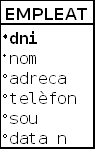
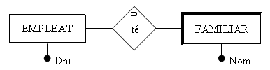
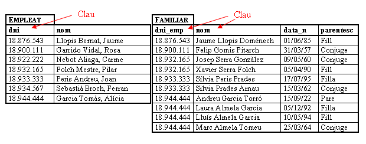
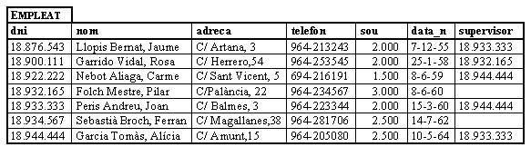
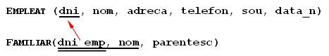
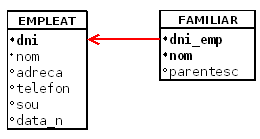

3. Restriccions
Igual que en altres models de dades, en el Model Relacional existeixen restriccions, és a dir, estructures o ocurrències no permeses.
Aquestes restriccions poden ser de dos tipus fonamentals: restriccions inherents , que són imposades pel propi model, i restriccions d'usuari (també anomenades restriccions semàntiques) en les quals és l'usuari qui prohibeix, perquè el model li ho permet, determinades circumstàncies per a poder definir millor la Base de Dades.
3.1 Restriccions inherents
Com hem dit són les que imposa el propi model. Algunes són característiques que han d'acomplir les relacions. Per tant no qualsevol taula matemàtica és una relació. Podem considerar les següents:
- Valors atòmics : cada valor de la taula, és a dir, qualsevol valor de qualsevol atribut de qualsevol tupla ha de ser simple, no divisible. Per tant no valen atributs compostos o repetitius.
Així, si considerem Nom en la relació Empleat com a nom de pila més cognoms, no serà divisible (no podré agafar posteriorment el nom de pila per una banda i els cognoms per una altra; si ho volguera fer, s'haurien de definir els atributs simples Cognom1 , Cognom2 i Nom).
Tampoc valen valors repetitius, per exemple un vector de 12 entrades. Queden per tant descartats els atributs multivaluats.
-
Tuples distintes : no poden haver dues tuples iguals. Això és una diferència respecte a les taules matemàtiques on sí que es poden duplicar files.
-
L'ordre de les tuples no és significatiu.
-
L'ordre dels atributs no és significatiu.
3.2 Restriccions d'usuari
Les anteriors són condicions, imposicions que ens dóna el mateix model.
Les realment interessants per a nosaltres són les restriccions d'usuari, també anomenades restriccions semàntiques, ja que seran condicions que podrem posar nosaltres per a que l'esquema de la B.D. explique el millor possible la realitat, i evitar possibles errors en les dades.
3.2.1 Restricció de domini
El valor d'un atribut ha de ser un valor atòmic del domini. Definint clarament el domini ens assegurem (dins del possible) que l'atribut no puga agafar valors incorrectes.
Per una banda, el domini serà d'un tipus determinat, triat d'una gamma prou extensa: enter curt, enter, enter llarg, real, doble precisió, caràcter, cadena de caràcters (text), data, hora, ...
Així, per exemple, definint el Sou com un número real impedirem que per error puga agafar el valor 2.R 00'00, o que la data de naixement , amb domini de tipus data, siga 15-14 -1958 o 31 -2 -1958.
També es podran definir dominis que estiguen en un determinat interval (nota d'un examen: 0-10) o d'un tipus enumerat (nota d'avaluació: MD, IN, SUF, BE, NOT, EXC).
3.2.2 Restricció de clau principal
Permet declarar un atribut o un conjunt d'atributs com a CLAU PRINCIPAL o PRIMÀRIA (Primary Key). Aquesta clau principal servirà per a identificar unívocament cadascuna de les files.
Com a conseqüència de l'anterior, la clau principal no podrà agafar valors nuls ni repetits, ja que en cas contrari no es podria assegurar la identificació de les files.
Aquestes últimes característiques també les podran tenir altres atributs, cosa que dóna lloc als tipus de restricció que es veuen en els següents punts.
Nosaltres sempre definirem una clau principal. Si tenim claus candidates, triem una d'elles com a clau principal. Si no en tenim, ens inventem un camp que servirà de clau principal (bé un número o bé un codi alfanumèric).
No és convenient que la clau principal estiga formada per un número excessiu de camps. Podríem dir que 3 és el màxim. Si la clau candidata està formada per més de 3 camps, o bé triem una altra clau candidata, o bé ens inventem una.
Ho representarem així:
EMPLEAT (dni, nom, adreça, telèfon, sou, data_n)
3.2.3 Restricció d'unicitat
Si en un camp, o en un conjunt de camps, definim la restricció d'unicitat (UNIQUE), això obliga a que, en cas de tenir valors el camp, no es puguen repetir. Suposem, per exemple, els alumnes d'un Institut. La clau no pot ser el DNI, ja que alguns alumnes no en tindran, però en cas de tenir-ne, és clar que no es podrà repetir.
Representarem que un camp és únic, posant únic entre parèntesi baix del camp. Per exemple, si considerem que el camp nom de la taula EMPLEAT ha de ser únic, ho representarem així:
EMPLEAT (dni , nom, adreca, telefon, sou, data_n)
(únic)
3.2.4 Restricció de valor no nul
Obliga a que el camp agafe sempre un valor. Per exemple, el camp Nom és un bon candidat a ser no nul.
Ho representarem posant no nul entre parèntesi baix del camp.
EMPLEAT dni , nom, adreca, telefon, sou, data_n)
(no nul)
Per mig de la representació alternativa, podem marcar amb un punt negre davant del camp no nul.

3.2.5 Integritat referencial
Per poder explicar-la ens recolzarem en un exemple.

que es podria traduir en les següents taules:

Si en una taula R2 (Familiar) tenim un atribut (dni_emp) que és clau (primària o candidata) d'una altra taula R1 (Empleat-- > dni), tot valor d'aquell atribut ha de concordar amb un valor de la clau de R1 (no he de poder posar en familiar un Dni que no el tinga cap empleat de l'empresa). L'atribut en R2 és, per tant, una CLAU EXTERNA.
Ha de ser impossible posar en Familiar el Dni 18.754.321, perquè no està en l'altra, i per tant no és un Dni d'un empleat de l'empresa.
Les relacions R1 i R2 no tenen per què ser distintes, poden ser la mateixa. Així, si considerem el supervisor, aquest ha de ser de l'empresa:

Supervisor és una clau externa, però de la mateixa taula. No tots els SGBD permeten una clau externa reflexiva.
Una manera de representar les claus externes en l'esquema és la següent:

On el doble subratllat indica una clau externa (que en aquest exemple, a més, forma part de la clau principal, però que no sempre serà així) que “apunta” a la clau principal de l’altra taula.
L'altra manera, utilitzant la forma alternativa, serà aquesta, que també és molt fàcil d'entendre:

Açò ens impedirà que introduïm valors no correctes, no existents. ¿Però què passarà si esborrem un empleat, o si modifiquem el seu Dni? ¿Què fem amb els familiars? Doncs en principi tres podrien ser les accions a realitzar, i depenent de la situació particular triaríem una o una altra:
-
No deixar esborrar-lo o modificar-lo (NO ACTION).
Segurament no és l'opció més adequada per a l'exemple dels empleats i els familiars. Però pensem en un altre exemple, amb clients i factures. Què fem si s'esborra un client i tenim factures d'ell? Segurament el més adequat serà no fer l'acció, és a dir, no esborrar el client (sobretot si les factures estan pendentes de cobrar ...). -
Esborrar també els familiars o canviar-los en cascada(CASCADE).
Segurament aquesta és l'opció més adequada per al cas dels familiars, que s'eliminen automàticament. -
Canviar el valor de la clau externa al valor nul o un valor predeterminat (SET NULL o SET DEFAULT).
En l'exemple dels familiars no té sentit ja que no ens interessen els familiars dels que no són de l'empresa. Però imaginem, per exemple, un proveïdor que ens ha proporcionat uns articles. Pel fet de no treballar ja amb el proveïdor i llevar-lo de la B.D. no hauríem d'eliminar els articles. Seria suficient amb donar un valor nul al proveïdor d'aquest article. Observem, però, que aquesta clau externa hauria d'admetre valors nuls. Si no ho permet, millor un valor per defecte.
Hi ha SGBD que fins i tot permeten accions distintes per al cas d'esborrament i d'actualització de la clau, com per exemple Access.
3.2.6 Restriccions externes
A pesar de totes les restriccions anteriors, que normalment els SGBDR compleixen, hi ha d'altres que no es poden expressar per mig del Model Relacional, i per tant no poden complir directament els SGBDR. Són les restriccions externes a l'esquema relacional. Estaran normalment les heretades dels Model E/R, i hi hauran algunes més que sí que es podien expressar en el Model E/R, però no en el Model Relacional. Les veurem en la pregunta 4.
Els SGBDR més avançats, més potents, permetran un tractament a aquestes restriccions externes, consistents en executar un procediment definit per l'usuari després d'una actualització. Són els Disparadors(TRIGGERS). Aquest concepte és molt potent, ja que dóna una resposta procedimental on es pot fer qualsevol cosa.
Llicenciat sota la Llicència Creative Commons Reconeixement NoComercial CompartirIgual 3.0